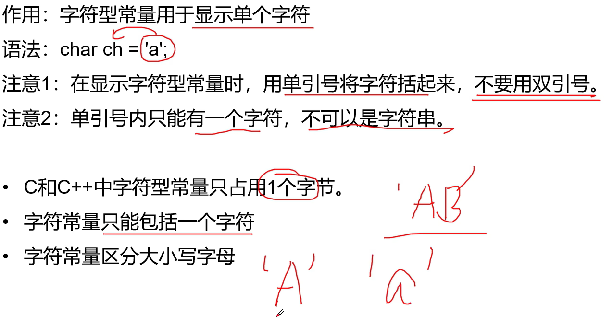
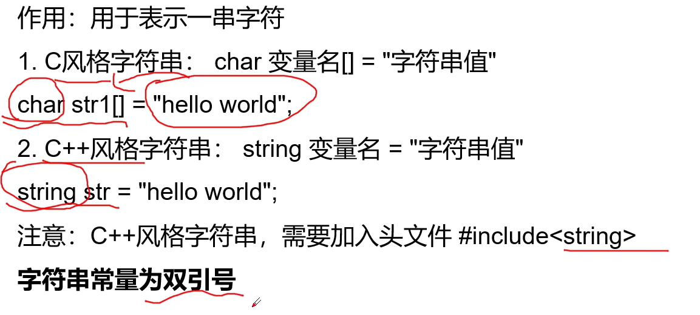
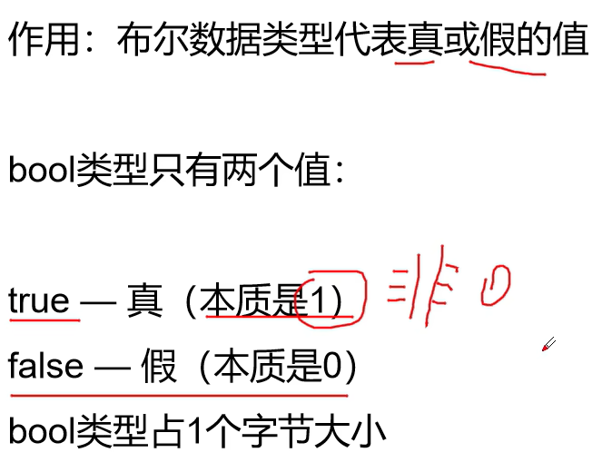
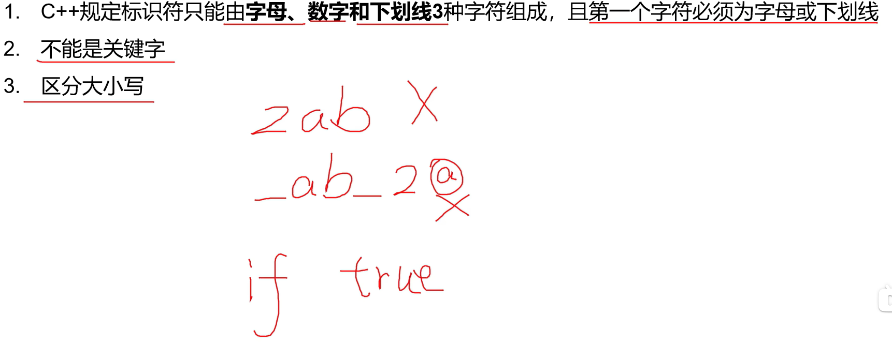
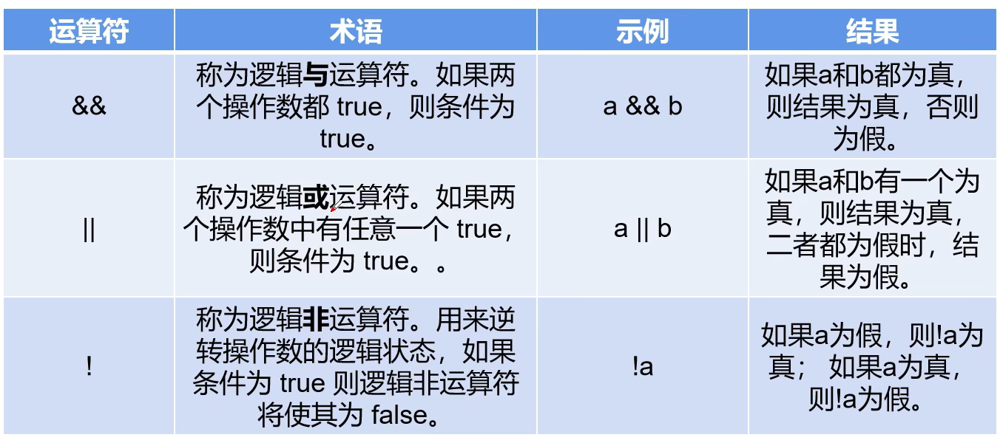
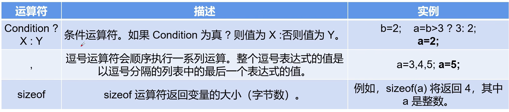
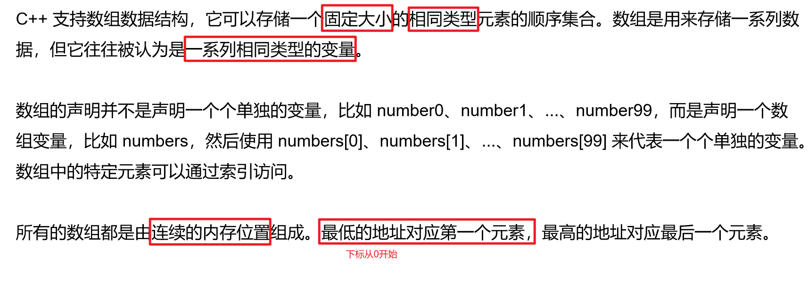
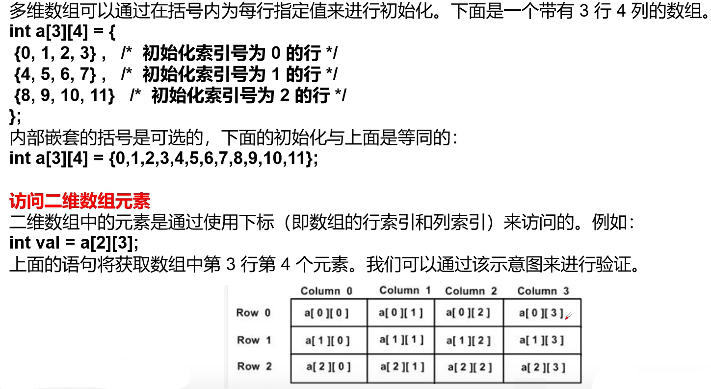
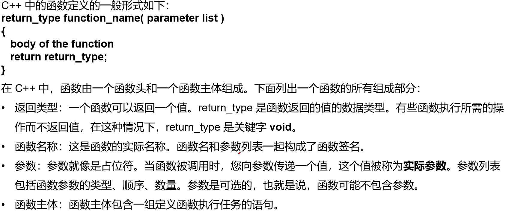
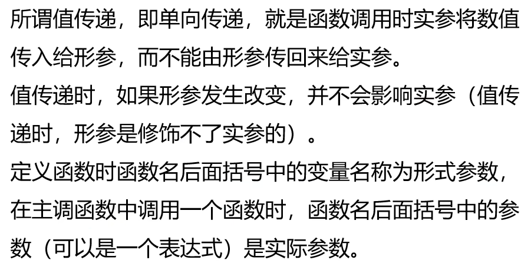

C++学习笔记
本篇笔记摘自《C++程序设计》3小时期末速成不挂科！！！ - 数学建模老哥,遵循CC BY 4.0协议。
存在由AI生成的小部分内容，仅供参考，请仔细甄别可能存在的错误。
一、数据类型
- C++的数据包括常量与变量，都具有一些数据类型：
1. 常见数据类型
2.常量
- 分为数值常量和字符(串)型常量两种
① 数值常量

- 指数形式： -> 3.14e-2
② 字符型常量

② 字符串型常量

③ 常考例题
3.整型

- 占n个字节的有符号整数，取值范围是 ~
- 占n个字节的有符号整数，取值范围是 ~
4.浮点型
5.布尔类型

６.变量命名规则

7.局部变量与全局变量

二、运算符
1.算术运算符


- 例题：

2.赋值运算符
3.比较运算符（关系运算符）
- 用于表达式的比较，并返回一个真值或假值
4.逻辑运算符

5.位运算符
- 两个多位二进制进行逻辑运算，采取按位逻辑运算的方法：

6.杂项运算符

sizeof()多用于获取数组长度，如：
1 | |
7.运算符优先级
略
三、流程控制语句
if语句、switch语句、while语句、for语句、Switch语句等过于基础，此处略去
四、数组
1.一维数组



2.二维数组



3.vector动态数组
vector是C++标准模板库(STL)中的一个动态数组容器，它提供了以下主要功能：
- 动态大小：可以自动调整大小，不像普通数组需要预先指定固定大小
- 连续存储：元素在内存中是连续存储的，支持随机访问
- 自动内存管理：自动处理内存分配和释放
- 丰富的成员函数：提供多种便捷操作元素的方法
1 | |
- 常用操作：
1 | |
五、函数
1.函数定义


- 即使制定了函数返回值类型为void，在函数体中也可以写
return;实现直接返回、取消执行后续逻辑的操作。
2.函数声明

3.函数调用

4.默认参数

- 默认值参数应该位于形参列表的尾部，即无默认值的参数前面不应该出现有默认值的参数
5.内联函数(内置函数)
- 内联函数分显示声明与隐式声明两种：
- 显示声明：声明在定义类的外，并加上
inline关键字 - 隐式声明：声明在定义类的内部，不用加上
inline关键字
- 显示声明：声明在定义类的外，并加上
六、指针
1.指针定义

2.常量与指针
- 对于
int * p = 1,认为*前面是对指针目标的描述(目标的数据类型等)，*后面是对指针自身的描述(指针名)，const在哪个部分，对应的描述对象就不可修改。- const int * p:先
const后*(指向常量的指针（pointer to const）)，此时可以修改指针的目标，不能修改目标的值。 - int * const p:先
*后const(指针本身是常量（constant pointer）)，此时可以修改指针目标的值，不能修改指针的目标。 - const int * const p:
const修饰p变量以及*p指针，此时不能修改指针目标的值，也不能修改指针的目标。
- const int * p:先
3.多级指针（指向指针的指针）
4.指针函数（返回值为指针的函数）
定义语法：
1 | |
七、自定义数据类型
1.结构体
- 访问结构体的成员时可以用
.和->(后者可重载)；ptr->member等价于(*ptr).member。
2.联合体(共用体)
- 使用联合体的目的主要是为了提高内存的使用效率，但只能同时使用其中一个成员，所以要及时取用共用体中的值，防止改用其他成员时旧的数据被覆盖掉。
3.枚举
- 本质上类似于用数值给一组东西编号，如
week[7] = {1, 2, 3, 4, 5, 6, 7}（称为"魔法数字"）。 - 这样写会降低代码可读性，其他用户很难看出1~7的具体意义，因此产生了枚举的数据类型：

八、类和对象
1.类和对象的定义
2.构造函数与析构函数
① 构造函数
- 构造函数的常用写法：
② 析构函数
3.成员函数、静态成员
① 成员函数
② 静态成员
4.类的友元
- A是B的友元 -> A可以访问B中标记为
private和protected的属性和方法。
九、继承与多态
1.继承
- 派生类(子类)可访问基类(父类)的
public和protected属性与方法，无论选择哪种方式都无法直接访问基类的private属性与方法。
- 构造函数与析构函数都不能被派生类所继承。
2.多态
① 静态多态
函数重载
- C++不以返回值区分函数重载，而是根据形参列表来区分。
运算符重载
<<与>>的重载：
1 | |
② 动态多态
虚函数
- 静态链接在类的多态(成员函数重载)中出现的问题：
- 通过将同样的
shape()方法以virtual关键字标识为虚函数，可以实现根据子类的不同调用不同的方法，即使方法名、返回值，甚至参数列表都是相同的。
virtual关键字只需要写在基类的(纯)虚函数上即可，派生类中的虚函数无需再写virtual。
虚基类
- 虚基类（Virtual Base Class）是C++中用于解决多重继承中的"菱形继承问题"（Diamond Problem）的一种机制。当多个派生类从同一个基类继承时，使用虚继承可以确保在最终的派生类中只有一份基类子对象。
- 例：A派生出B和C，同时D又继承自B和C（菱形继承），类D中就会有两份类A的成员，这会导致访问的二义性。
1 | |
- 通过在继承时使用
virtual关键字，B和C都虚继承自A，A即为虚基类 - 当D继承B和C时，A的子对象在D中只有一份
- 构造函数调用顺序：
- 虚基类构造函数最先被调用（A）
- 然后是普通基类构造函数（B、C）
- 最后是派生类自己的构造函数（D）
- 如果不使用虚继承，D中将有两份A的成员，访问
data时需要指定路径（B::data或C::data），否则会产生编译错误。
十、输入输出流

十一、编程例题
1.虚函数
完整实现Shape抽象基类，包含：
- 2个纯虚函数（area和perimeter）1个带默认实现的虚函数（printInfo）
- 虚析构函数：必须使用虚析构函数
实现3个具体派生类：- Circle（标记为final）
- Rectangle
- Square（继承自Rectangle）
总体任务：- 抽象基类 Shape：定义图形的基本接口
- 具体图形类（Circle、Rectangle、Square）：实现特定图形功能
- 管理类 ShapeManager：演示多态的实际应用
1 | |
2.运算符重载
定义一个时间类Time，包含三个属性： hour, minute 和 second
要求通过运算符重载实现如下功能:
- 时间输入输出(>>、<<)；
- 时间增加减少若干(+=、-=)，
- 例：Time& operator+=(const Time&);Time& operator-=(const Time&)；
- 时间前、后自增加/减少1秒(++、–)，
- 前自增例：Time& operator++();
- 后自增例：Time operator++(int)；
输入形式：- 输入固定为两个Time实例(time1，time2),每个实例占一行；
- Time实例输入格式为：hour minute second。
输出形式：- Time实例输出格式为：hour:minute:second；
- 每个输出实例占一行。
依次输出以下表达式的值- time1 += (time2++)
- time1 -= time2
- ++time2
- time2 += (time1–)
- –time1
- time2 -= time1
1 | |
3.虚基类
设计一个学校人员管理系统，包含以下角色：
- 人员基础信息（姓名、年龄、ID）
- 学生（额外信息：专业、年级）
- 教师（额外信息：部门、职称）
- 教授（可以是教师又是研究员）
- 助教（可以是学生又是教师）
1 | |
C++学习笔记
http://blog.morely.top/2025/06/11/CPP学习笔记/